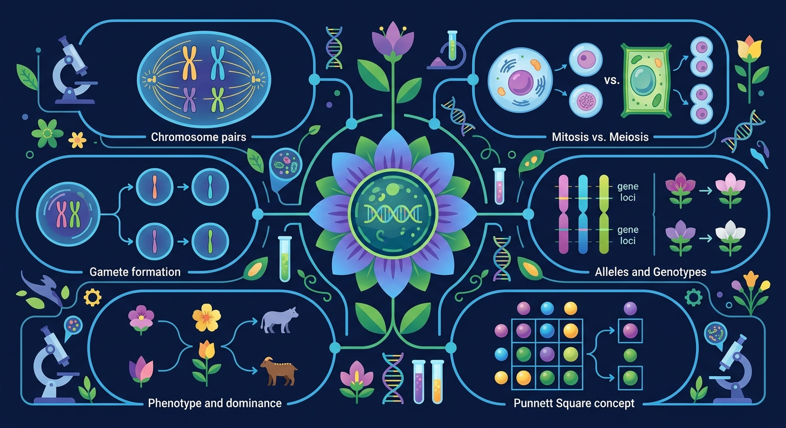

Gallery v1.0.0 · skill v7.14
遗传信息怎样被保存、表达、传递，又怎样影响性状？

已经知道：学生此前已掌握基因、性状、显隐性等基本遗传概念，并了解孟德尔豌豆实验的杂交现象，知道子一代均表现为显性性状
但问题是：学生常混淆等位基因分离与自由组合的关系，难以理解为何子二代会出现3:1的性状分离比，且无法通过配子形成过程解释该现象
所以学：当分析家族遗传病（如白化病）时，需要预测患者后代的发病概率。学习分离定律才能通过亲本基因型推导配子组合，准确计算遗传风险
先选一个卡点。后面的例子、互动和 AI 学伴都会围绕它给你最小提示。
选择或输入后，本课会围绕你的问题展开。
关于分离定律，哪种说法反映学生常见误解？
现象入口：豌豆杂交实验中，亲代表型消失后又在子二代按比例重新出现。
机制解释：分离定律的本质是减数分裂时等位基因分离，非同源染色体上的非等位基因自由组合。
证据抓手：证据来自杂交实验比例、测交结果、配子类型和棋盘格推断。
变量线索：亲本基因型、配子类型、显隐性关系和基因是否独立遗传。做题时先找变量，再判断机制，最后写证据。
观察豌豆高茎与矮茎杂交后代的 3:1 性状分离比
分析 Dd 自交产生 1:2:1 基因型比的过程
显性基因不融合隐性基因，配子中独立传递
预测测交实验 1:1 表现型的遗传机制
情境：看到3:1或9:3:3:1比例时，必须先确认完全显性、独立遗传和样本量条件。
作答路径：观察F2代3:1比例→推测亲本为杂合子Dd→验证配子形成时D/d分离→统计多组实验确保样本量足够，排除不完全显性干扰
评分提醒：典型错误：未区分性状分离与基因型比例，混淆测交与自交的预期值，忽视样本量对比例的影响
先用 PhET 观察转录和翻译如何把遗传信息转成蛋白质，再回到本课的 Canvas 任务，把“信息流”与 分离定律 联系起来。
💡 操作提示：拖动调控元件，观察 mRNA 和蛋白质产量变化，思考“表达量变化”和“性状变化”之间的证据链。
Dd 自交子代理论比 3:1。增大样本观察比例收敛，理解孟德尔用大样本归纳出分离定律的科学方法。
💡 探究任务：样本从 20 加到 500，记录显性比例的波动幅度变化，说明“3:1”是概率而非保证。
只套比例不写亲本基因型和配子，是遗传题常见空答案。
只说“增加/减少”不够，要写清改变的是 亲本基因型、配子类型、显隐性关系和基因是否独立遗传 中的哪一个。
没有实验现象、曲线趋势或结构证据，答案就像猜测。
下列哪组概念最需在本课区分？
视频用语音和动态画面回顾本课主线：问题情境 → 机制模型 → 证据判断 → 迁移应用。
预测遗传病风险、育种杂交结果，都要先写清基因型和配子。
提交后会检查你的解释是否包含现象、机制和变量。
如果学生只说出概念名称，继续追问：题干里哪个证据最关键？这个证据对应分子、细胞、个体还是生态系统层级？如果改变 亲本基因型、配子类型、显隐性关系和基因是否独立遗传 中的一个条件，结果会怎样？这三问能把答案从背诵推进到科学解释。
写出Dd个体产生的配子类型及比例
分析测交实验出现1:1比例时亲本的基因型组合
设计实验验证紫花白花性状是否遵循分离定律
孟德尔豌豆实验中，F2代高茎:矮茎≈3:1的根本原因是？
学习小结：分离定律核心是成对遗传因子在减数分裂时独立分离，通过配子随机结合形成特定比例，如Dd自交子代3:1
先独立作答，再点选项查看对错与错因。
若用A/a表示花色基因，F2代白花豌豆的基因型是
F1代紫花豌豆自交产生F2代时，雌配子种类及比例为
孟德尔实验中F2代出现3:1比例的关键原因是
若F2代紫花豌豆中基因型为AA的占____
答案：1/3
紫花中AA:Aa=1:2
孟德尔实验中，等位基因在____期发生分离
答案：减数第一次分裂后
同源染色体分离导致等位基因分离
使用黑白棋子模拟基因分离过程
❓ 为什么我爸妈都是双眼皮，我是单眼皮？
❓ 孟德尔为啥要种豌豆？直接问植物不行吗？
❓ 考试总让我算概率，现实中真能用上吗？
学完这一课，这些问题你都能自信地回答。
✅ 显隐性由基因决定，与出现频率无关
💡 混淆'显性基因'和'优势基因'概念
✅ 需先确认亲本是否为纯合子
💡 忽视孟德尔实验的严格前提条件
口诀：同源分开等位离，配子随机再相遇
类比：就像分扑克牌时，红桃A和黑桃A必须分给不同玩家